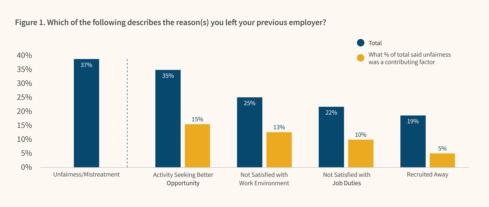

How Do We Shape Community?
Anna Neyzberg • @ANeyzb • anna@carbonfive.com
About me:
- I co-founded ElixrBridge founders
- I almost went to medical school

What I want to talk about today?
Community
- Why is it important?
- What to think about when creating community?
- How to make it sustainable.
Why is community important?

credit: https://culclinc8.wordpress.com/2014/06/28/diverse-team-2/
We build better products with diverse teams

credit: http://geeksincambodia.com/free-basics-by-facebook-is-now-available-in-cambodia/

credit: http://www.bbc.com/news/world-south-asia-12557384

credit: https://dazeinfo.com/2016/02/08/mobile-internet-users-in-india-2016-smartphone-adoption-2015/
credit: https://jsis.washington.edu/news/spotlight-indias-internet-facebooks-free-basics-basic-failure/
credit: https://www.theguardian.com/technology/2016/may/12/facebook-free-basics-india-zuckerberg
"India’s rejection of Free Basics was as economically catastrophic to it as its independence from British colonisation."
- Facebook Board Member
- India's Railway site books 1.3 billion tickets a day
- Farmers need weather forecasts
- Women in remote villages get easy acess to feminie hygiene products
So why am I explaining all this?
Promoting diversity means promoting understanding
This leads to better products that solve problems for those who might’ve otherwise been sidelined.
credit: http://www.talentinnovation.org/assets/IDMG-ExecSummFINAL-CTI.pdf
credit: http://www.talentinnovation.org/assets/IDMG-ExecSummFINAL-CTI.pdf
credit: http://www.mckinsey.com/business-functions/organization/our-insights/why-diversity-matters
So we know diversity is important
Yet there is still a problem
Teach Leavers Study 2017
 credit: http://www.kaporcenter.org/wp-content/uploads/2017/08/TechLeavers2017.pdf
This brings us to ElixirBridge

But first....
What is RailsBridge?

- Started by Sarah Allen & Sarah Mei in 2009
- Free weekendlong workshops for women
- All volunteer run
- Helped Ruby community in SF go from 2% women to 18% women in 1 year(2009-2010)
ElixirBridge
- What is ElixirBridge
- What motivated ElixirBrige
- What we have seen work so far
What is ElixirBridge?

Schedule
Friday night: InstallFest
Saturday: Workshop
- 9:30 - 10:00am: Sign in, coffee, breakfast
- 10:00 - 10:15am: Intro!
- 10:30 - 12:30pm: Session 1
- 12:30 - 1:30pm: Lunch!
- 1:30 - 4:00pm: Session 3
- 4:15 - 4:30pm: Retrospective
What has worked for us in Building Community
Welcoming inclusive environment
- Code-of-Conduct
- Goals
- Rules
- Resources
- Accessibility
Code-of-Conduct
- https://bridgefoundry.org/code-of-conduct
- A harassment-free experience for everyone is essential
- Everyone has something to contribute.
- Anyone is welcome to replicate an event
Clear Examples
- Use your words and respect boundaries
- If you feel like it would help to work directly on someone’s keyboard, ask first.
- Refer participants to open and free material for follow-up learning.
- Do not ask anyone out on a date.
Grey Area
- If you are not sure your behavior is appropriate. It probably isn't
- Each person you interact with gets to define what that line is
- Do not assume that your way of thinking is the norm
Everyone has limited knowledge but inifinite potential
"We teach people to code because we believe that the people making technology should accurately reflect the diversity
of those using it."
Goals
- What is the mission?
- Who is the audience?
- Break macro goals into micro ones?
- Create specific pieces of work people can take on?
Rules
- What rules do you need in place to function?
- example: how do you respond to a disruptive student?
- If an organizers is being disruptive how is that dealt with?